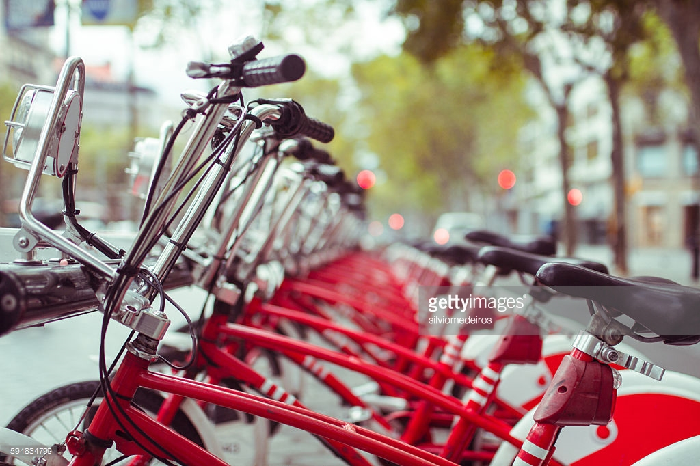
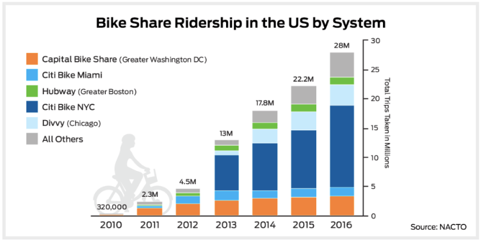
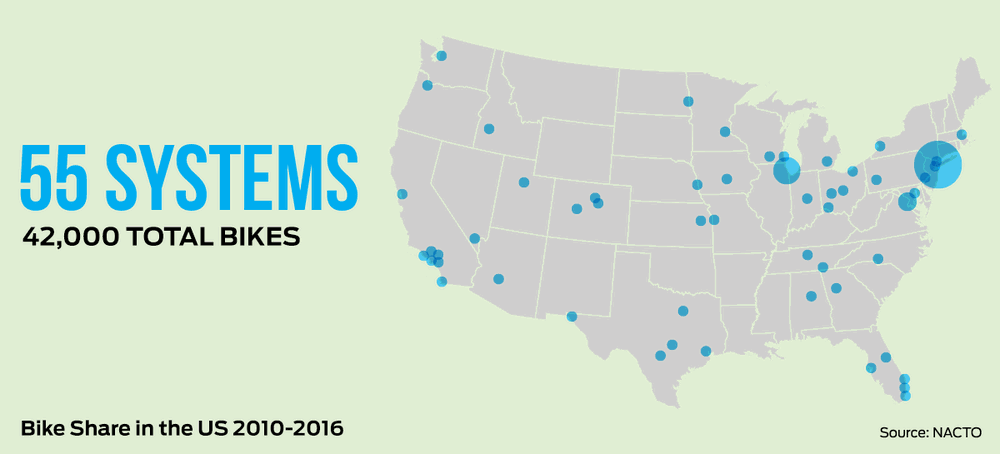

Ten years ago, bike share was a novelty in the U.S., with a few thousand bikes in operation. Today, there are 55 systems spread across across the country, with over 42,000 bikes available in cities of all sizes. Over the same decade, however, traffic congestion and vehicle miles have increased faster than ever. So how much is bike share really changing how we get around?

Almost every large city in the United States now has bikeshare. Any city without it should count itself way, way behind the curve. There are at least 119 systems nationwide, covering all but two of the 20 largest urban areas.
Since 2012, the number of bike-share trips has grown ten-fold, double the rate of growth in bike-share bikes, meaning the systems are being used more intensively. This is all with a safety record that is practically unblemished. So far there has been just one recorded death of a bike share user. Bike-share growth should continue in 2017, with San Francisco and New York both planning major expansions.
Bike Share Ridership in the US
The National Association of City Transportation Officials (NACTO) has compiled the most comprehensive bike share study to date, looking at the number of bikes, trips, and systems. The facts prove something you’ve probably witnessed first-hand: U.S. bike share culture is growing at an astounding rate.

Bike Share Growth in the US. Source - NACTO.
But not just the number of systems that’s grown—the dramatic increase in bike share ridership is also notable. Compared to just five years ago, the number of bike share trips nationwide have increased from 2.3 million to over 28 million.

Bike Share in the US. Source - NACTO.
Most of the trips—85 percent—are taken within just five big systems:
Citi Bike in New York
Capital Bikeshare in D.C.
Citi Bike in Miami
Divvy in Chicago
Hubway in Boston
And of those cities, New York’s Citi Bike is fueling most of the year-on-year growth. But a total of 28 million rides per year on what’s essentially a brand-new mode of transport for cities is a significant number of trips. (Although the U.S. is lagging far behind China’s numbers.)
It's been less than 10 years since the first large-scale bikesharing systems debuted in the United States. In that time, bikes have spread like wildfire across the country. This list only includes networks with at least two stations, but bikesharing has become so ubiquitous that individual buildings now offer single-station systems.
Future of Bike Share
The growth of bike share shows no signs of stopping. A number of U.S. cities, such as Detroit, New Haven, and New Orleans, have either selected vendors or are planning to launch systems, and many existing systems are also rolling out major expansions: New York’s Citi Bike is adding another 2,000 bikes, for a total of 12,000; Houston is more than tripling in size to over 100 stations; and the San Francisco Bay Area is expanding from a 700 to a 7,000 bike system.
The expansion and densification of systems across the country is helping move bike share towards realizing its potential as an integrated, low-cost part of city transportation systems. More people on bike share means that more people are saving time, realizing new opportunities for exercise and health, and finding it easier to access economic opportunities. The care that many cities are taking to deeply engage local communities, hire locally and intentionally, expand their bike share systems, build out protected bike lane networks, and create accessible pricing ensures that bike share provides opportunities for everyone in their cities, regardless of race or income.